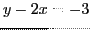

Next: Parametric equations of a Up: Simple applications of the Previous: Equations of tangent and Contents Index
Solution. . Hence
Ans. At , , . At , , .
Ans. , , .
Ans.
 .
.
Here's how to find the length of tangent, normal, subtangent and subnormal of this in SAGE using the values , (so ) and , .
[fontsize=\small,fontfamily=courier,fontshape=tt,frame=single,label=\sage]
sage: x = var("x")
sage: y = var("y")
sage: F = x^2 + y^2/4 - 1
sage: Dx = -diff(F,y)/diff(F,x); Dx; Dx(4/5,6/5)
-y/(4*x)
-3/8
sage: Dy = -diff(F,x)/diff(F,y); Dy; Dy(4/5,6/5)
-4*x/y
-8/3
(For this SAGE calculation, we have used the fact that implies
, where  is regarded as a function of
is regarded as a function of
 .) Therefore, we have (using (6.3))
.) Therefore, we have (using (6.3))
Ans. , .
Ans. . (Hint: First find point of contact by method of Example 6.1.1.)
Ans.
Ans. .
Ans. At , , . At , , .
(This curve is parameterized by , , . Parametric equations shall be discussed in the next section.)